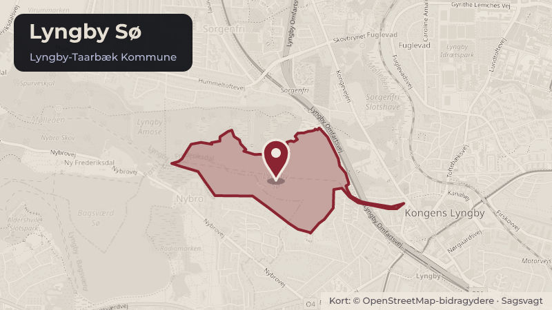

På dagsordenen 3. december, Kultur- og Fritidsudvalget, Lyngby-Taarbæk
Samarbejde med Gladsaxe Kommune om Projekt Furå

Kort fortalt
- Hvem
- Kultur- og Fritidsudvalget, Lyngby-Taarbæk Kommune
- Hvornår
- Torsdag 3. december 2026
- Status
- På dagsordenen. Sagen behandles på mødet.
- Næste skridt
- Projektet har indtil nu gennemgået den indledende analysefase om miljøtilstanden i Bagsværd Sø. Næste skridt vil være projektafklaringsfasen, som i så fald skal udbydes til en eller flere rådgivere.
Er noget forkert her? Skriv til os
Hvad kan du gøre?
- Skriv til politikerne
- Udvalgets møder er lukkede, men du kan skrive til medlemmerne før mødet torsdag 3. december 2026. Du finder dem på ltk.dk.
Læs hele sagen Kommunens egen tekst
Indstilling
Forvaltningen foreslår, at
1. samarbejdet med Gladsaxe Kommune fortsætter således, at projektets fase 2 –
projektafklaring, kan indledes,
2. der kan etableres en følgegruppe bestående af repræsentanter for områdets
repræsentanter og hørings- eller klageberettigede parter,
3. der orienteres om sagen.
Baggrund
Teknik- og Miljøudvalget godkendte 10.11.2021, punkt 3, at Lyngby-Taarbæk Kommune deltog
i et samarbejde med Syddansk Universitet (SDU) og en række omegnskommuner om et ph.d.projekt, der skulle undersøge Furesøs interne fosforpulje, økologiske tilstand og dets
påvirkning nedstrøms på blandt andet Bagsværd Sø. Gladsaxe Kommune har siden suppleret
ph.d.-projektet med en række yderligere undersøgelser med fokus på hvilke væsentlige
parametre, der fastholder Bagsværd Sø i en dårlig tilstand.
Vedlagt SDU’s endelig afrapportering af deres arbejde ”Helhedsorienteret forvaltning af
Furåsystemet – Bagsværd Sø og Lyngby Sø” (bilag 1). Her fastholder SDU deres anbefaling,
om at indsnævre og ensrette vandløbet Furå, hvilket Teknik- og Miljøudvalget blev orienteret
om 19.08.2025, punkt 19. Rapporten har også fokus på, hvilke positive effekter et sådan tiltag
vil have på Lyngby Sø og resten af Mølleåen nedstrøms heriblandt tilbageholdelse af vand i
perioder både med meget og lidt vand i Mølleåsystemet samt en reduktion i fosforbidrag fra
Bagsværd Sø i sommermånederne.
Samarbejde med Gladsaxe Kommune
Da Furå udgør kommunegrænsen til Gladsaxe Kommune, forudsætter undersøgelser og
eventuelle tiltag et tværkommunalt samarbejde. Et projekt af denne karakter kræver et grundigt
forarbejde og en fælles afklaring på tværs af kommunerne.
Lyngby-Taarbæk og Gladsaxe Kommuner er nu i gang med samarbejdet om projektet og har
blandt andet udarbejdet en oversigt over hvilke interessenter, der skal inddrages i det
kommende arbejde og skabt overblik over en eventuel kommende myndighedsproces.
Løsninger
Rapporten og "Om projekt Furå"
Rapporten ”Helhedsorienteret forvaltning af Furåsystemet – Bagsværd Sø og Lyngby Sø”
samler SDU’s viden om, hvorfor Bagsværd Sø fortsat ikke opnår god økologisk tilstand.
Resultaterne peger på, at store mængder fosfor transporteres med vandet fra Furesø gennem
Mølleåsystemet og videre til Bagsværd Sø. Denne tilførsel vurderes i dag at være den
væsentligste årsag til, at vandkvaliteten i Bagsværd Sø ikke har udviklet sig som forventet.
Rapporten fremlægger to løsningsmodeller, som begge handler om at ensrette
vandgennemstrømningen under Nybro således, at vandet kun kan bevæge sig ud af Bagsværd
Sø og ikke som det sker i dag, hvor det pulser ind og ud. Løsningerne har til formål at
genskabe mere naturlige vandbevægelser i Furåsystemet for at reducere fosfortransporten fra
Furesø ind i Bagsværd Sø og forbedre vandmiljøet. Løsningsmodellerne er beskrevet som en
naturbaseret løsning og en teknisk sluseløsning. Den naturbaserede løsning vil skabe et mere
naturligt åprofil ved at reducere bredden i vandløbet, som i sagens natur vil have betydning for
søernes brugere. Det forventes således i denne løsning, at større både herunder Bådfarten og
formentlig følgebåde til rosporten ikke vil kunne passere passagen mellem Bagsværd Sø og
Lyngby Sø. En naturbaseret løsning vil forventeligt være den billigste af løsningerne. Afhængig
af udformningen af den tekniske sluseløsning kan det nuværende åprofil forventeligt bevares,
og dermed vil større både også kunne passere. Den konkrete tekniske løsning vil skulle
belyses i den kommende projektfase – og det skal undersøges i hvilket omfang, en teknisk
sluseløsning fartøjer kan passere samtidig med at den ønskede effekt på vandstrømningen
sikres. En teknisk sluseløsning må forventes at have større etablerings- og driftsomkostninger
tilknyttet end en naturbaseret løsning.
Begge løsninger vil medføre en fysisk ændring i Furå. Både Lyngby Sø og Bagsværd Sø samt
Furå-strækningen bruges flittigt i dag af kanoer, kajakker og robåde samt større både som
følgebåde og bådfarten. Udformning og konsekvenserne ved de to løsninger for sejlende
brugere i Furå vil blive undersøgt i næste fase.
Rapportens hovedkonklusioner er sammenfattet i notatet ”Om Projekt Furå” (bilag 2), som
samtidig introducerer det tværkommunale samarbejde, der blev igangsat på forvaltningsniveau
i 2026 med henblik på at undersøge og udvikle mulige løsninger for Furåsystemet.
Proces, myndighedsforhold og interessentinddragelse
Projekt Furå har gennemgået den indledende analysefase, og næste skridt er at få udarbejdet
et skitseprojekt, der belyser de mulige løsningsscenarier, herunder konsekvenser, økonomi,
tidsplan og efterfølgende drift. Skitseprojektet skal samtidig skabe et mere kvalificeret grundlag
for den videre politiske behandling og udarbejdes på baggrund af interessentinddragelse.
For at sikre, at relevante aktører kan bidrage med viden, perspektiver og erfaringer, har
kommunerne udarbejdet en foreløbig plan for interessentinddragelsen (bilag 3). Der forventes
afholdt et bredt interessentmøde i januar 2027, hvor projektets formål, indhold og videre proces
præsenteres.
Forvaltningerne lægger desuden op til, at der kan etableres en følgegruppe med
repræsentanter for områdets væsentlige brugere samt hørings- og klageberettigede parter med
henblik på at sikre en løbende dialog om projektet og de mulige løsninger.
Projektet berører et område med væsentlige natur-, miljø- og fredningsinteresser og forventes
derfor at kræve omfattende myndighedsbehandling. Afhængigt af den valgte løsning kan flere
myndigheder blive involveret, herunder kommunerne, Styrelsen for Grøn Arealomlægning og
Vandmiljø og Fredningsnævnet. De myndighedsmæssige rammer og krav vil blive afklaret som
en del af det videre arbejde.
Strategisk ramme
Indsatsen understøtter både DK2020-klimaplanen og de på nuværende tidspunkt foreslåede
strategiske pejlemærker (gældende fra 2027) for Teknik- og Miljøudvalget. Derudover
understøtter projektet også bæredygtighedsstrategien samt biodiversitetshandleplanen.
Økonomi
Sagen har ingen bevillingsmæssige konsekvenser.
Projektafklaringsfasen er finansieret af Gladsaxe Kommune indenfor den eksisterende
anlægsbevilling for Renere Bagsværd Sø, som blevet bevilget med budget 2021. Der resterer i
øjeblikket 2,5 mio. kr. på denne bevilling.
Kommunalbestyrelsen i Lyngby-Taarbæk Kommune har afsat midler til en styrket indsats for
Mølleåen i årene 2027-30, hvor dette projekt kan indgå i denne indsats.
Videre proces
Projektet har indtil nu gennemgået den indledende analysefase om miljøtilstanden i Bagsværd
Sø. Næste skridt vil være projektafklaringsfasen, som i så fald skal udbydes til en eller flere
rådgivere. Formålet med denne fase er at udarbejde et skitseprojekt med tilhørende tidsplan
og økonomiske beregninger, der belyser de to mulige løsningsscenarier, som der senere skal
træffes politisk beslutning om. Det er vigtigt at skitseprojektet afklarer hvilke konsekvenser, der
er ved de to løsningsscenarier og også beskriver en kommende drift af disse.
Skitseprojektet udarbejdes på baggrund af en kommende interessentinddragelse.
Efter politisk valg af scenarie skal projektet detailprojekteres og myndighedsbehandles.
Forvaltningen vil ved godkendelse af sagen løbende orientere Teknik- og Miljøudvalget om
status på projektafklaringsfasen.
Kilde: Lyngby-Taarbæk Kommune, Kultur- og Fritidsudvalget, dagsorden fra mødet torsdag 3. december 2026, punkt 9. Læs den originale sag hos kommunen.
Bydele i sagen: Taarbæk
Steder i sagen: Lyngby Sø